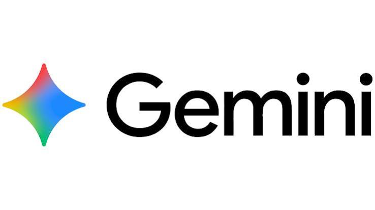
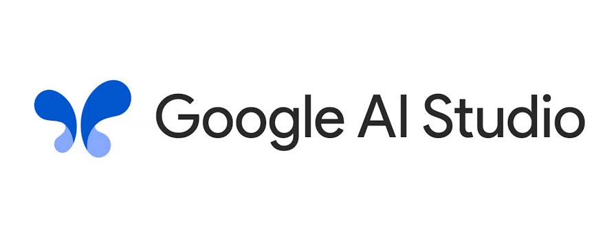

DRESS ME / Custom clothing, enabled for brands
Your measurements.
Made for you by the brand.
DRESS ME helps clothing brands offer garments made to each customer’s measurements. Customers provide photos or body measurements; the brand receives a personalized pattern to review and use for production. AI tools and APIs connect measurement capture, pattern drafting and garment review to support a customizable clothing business model.
The deliverable
A personalized pattern for the brand.
Customers share their measurements. The brand turns them into garment-specific patterns for its makers or production partners. DRESS ME connects the customer’s inputs to the brand’s making process, so the brand can produce clothing for the individual.
One example. An extensible workflow.
Your brand’s designs. Each customer’s measurements.
A brand can extend the workflow to its own garment designs by adding the appropriate drafting modules. Each design follows the same measurement → pattern → CLO → visualization process. The princess-line dress is the design implemented in this prototype.
- 01
Capture customer measurements
Vonage Video API + Google Gemini
An easier start for the customer
- Input
- Customer photos with a known-size reference object, or measurements entered directly.
- Method
- Gemini estimates body dimensions from scaled photos for customer review. Planned Vonage video capture would guide the same process live.
- Output →
- Reviewed body measurements in centimetres, ready for the drafter.
Photo upload · connected / Vonage · planned
Explore step 01 ↓ - 02
Draft the customer’s pattern
DRESS ME · Garment drafting engine
The core output / Brand production
- Input
- Reviewed measurements and the drafting rules for the chosen garment design.
- Method
- Calculate measured pattern geometry using garment-specific rules. This prototype demonstrates a princess-line dress; other designs need their own drafting module.
- Output →
- Customer-specific pattern panels for the brand’s production process and a DXF handoff to CLO.
Drafter · working / Website DXF export · planned
Explore step 02 ↓ - 03
Review the garment in CLO
CLO
Virtual assembly before physical sampling
- Input
- Exported pattern panels and an avatar configured for the customer’s measurements.
- Method
- Import the DXF, arrange and sew the panels, then simulate a neutral toile to inspect construction, shape and fit before making a physical sample.
- Output →
- A simulated garment for review, plus renders for optional visualization.
CLO sample · available
Explore step 03 ↓ - 04
Preview the look
Google Gemini
Optional / Customer visualization
- Input
- CLO renders and photos of the customer.
- Method
- Gemini uses the person’s identity and the CLO garment’s design and fit as visual references for a studio image.
- Output →
- A customer-facing preview. The brand uses the pattern to make the garment.
Image generation · connected
Explore step 04 ↓
What moves between the steps
Photo upload / Vonage capture planned→Photo + known-size object→Measurements cm→Pattern DXF→White toile image→Dressed-person image
Prototype scopePhoto-based measurements are AI estimates for review; measured values can also be entered directly. The princess-line drafter is working, and its DXF has been taken into CLO. The website’s DXF export control and Vonage capture remain planned. Step 4 is connected to Gemini image generation and requires an API key. Other garment designs require their own drafting rules and validation.
01 / Easier measurement capture
An easier way to order made-to-measure.
Front view + reference object
Side view

Back reference
Sample photos and supplied measurements · 94 / 70 / 98 / 38 cm. Replace the front and side photos to measure a new person.
Use a full-body front photo with a complete reference object of known size in the same plane as the body. Add a side view to improve circumference estimates. JPEG, PNG or WebP · up to 8 MB each.
Gemini connection settings
Checking connection…
The key stays in this page for the current session; it is not saved in browser storage.
Selecting a file previews it locally. “Estimate measurements” sends the selected photos to Google Gemini.
Try a demo measurement set
Explore how different body measurements change the pattern. These are sample values; no photo analysis or API key is required.
01 / Measure → review → draft
Customers can provide photos with a known-size reference or enter their body measurements. Review the AI estimates with the customer before drafting. The approved values shape the pattern the brand will use to make their garment.
Back length is measured from the centre-back neck base to the natural waist. If it cannot be estimated from the photos, the current value is retained for you to check. These values drive both the construction player and the finished pattern.
02 / Personalized patterns for the brand
A customer’s measurements. The brand’s pattern.
Follow measured bodice and skirt geometry into four princess-line panels. This is the current garment example within a workflow designed to support other drafting modules.
The construction player uses the reviewed measurements from Step 1 to calculate actual pattern geometry. Its 22 steps expose the drafting rules behind the garment; CLO and physical sampling are the next stages of fit review.
Open full drafting tool ↗02 / Drafted pattern
The brand’s making pattern.
Four measured panels with stitch outlines, sewing marks and grainlines—the same geometry shown in step 22. The existing exporter provides a DXF handoff; an export control here is planned. Check production details and fit through sampling before cutting final fabric.
03 / DXF → CLO · Construction and fit review
Review the garment before production.
The pattern moves into CLO as panels that can be arranged, sewn and simulated. This princess-line sample demonstrates the handoff from measured 2D geometry to a 3D garment, supporting review before physical cutting and sewing.
CLO / Sample garment
Three views. One pattern.
Supplied CLO screenshots · neutral toile material.

The flat pattern / The assembled garment
Four panel shapes.
Both sides of the dress.
Centre front, side front, side back and centre back are mirrored to form the full garment. The 2D workspace shows their arrangement; the views below show the result after sewing and simulation in CLO.
These screenshots document one simulated sample. CLO helps review the garment; a physical toile confirms real-world fit. Step 4 uses these renders only to help the customer visualize the look.
See the garment views ↓
02 / Front
Neckline, front seams and hem.
View full size ↗
03 / Side
Profile, armhole and side silhouette.
View full size ↗
04 / Back
Back seams and waist shaping.
View full size ↗04 / Optional customer visualization
Picture the look before making.
Help the customer picture the garment on their own body. Gemini combines their photos with CLO references for style and fit to create a studio visualization. This image does not change the pattern or verify physical fit; the measured pattern is what supports making the garment.
Visual preview / Front & side
Supplied visualization images
Presentation samples · create your own below.
Your generated visualization
Example results / Supplied visualization images

01 / Front
The neckline, princess seams and flared hem.

02 / Side
The profile, waist shaping and garment length.
DRESS ME / From measurements to making
Your brand’s design.
Made for your customer.
DRESS ME supports a customizable clothing business: customers provide their measurements, and brands use personalized patterns to make garments for them. AI simplifies measurement capture; drafting rules create the pattern; CLO supports the brand’s review; optional visualization helps the customer picture their order. The princess-line dress demonstrates a workflow that can extend to other designs through new drafting modules.
Measure → Draft → Simulate → Visualize
Return to the workflow ↑DRESS ME / Credits
Built by
Aishwarya Shinde
Chelsea Hai
Powered by

